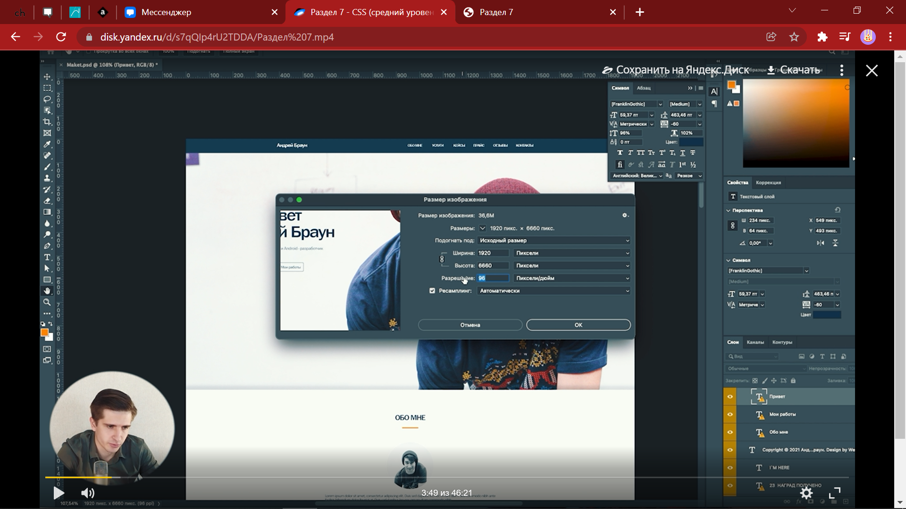

Настройки разрешения в фотошопе для определения истинного размера шрифта
Появление панели разработчика в браузере (удобно чекать ошибки прямо с сайта):
Сюда можно загружать свои шрифты и потом вставлять их в html. О том как это это сделать сказано на 10:30
Отсюда я буду брать кучу иконочных шрифтов
Вот такСуществует несколько видов вёрстки
Отладка сайта с помощью плагинов pixel perfect.
В общем, такая вёрстка используется в особых случаях
Все отступы и размеры отмеряются не пикселями, а процентами.
In general, вёрстка имеет место быть, но при маленьких разрешениях экрана весь текст съезжает.
Поэтому придумали гибрид этих двух видов.